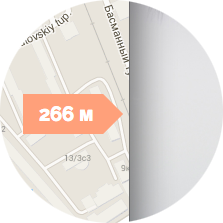

Distance tooltips for Google Maps
Show distance and position of markers that don't fit into current viewport of a map. Has no dependeces beyond Google Maps API.
Example:
var map = new google.maps.Map(document.getElementById("map-canvas")),
position = new google.maps.LatLng(55.730196, 37.602141),
marker = new google.maps.Marker({ position: position }),
distanceOverlay = new DistanceOverlay({ position: position });
distanceOverlay.setMap(map);
marker.setMap(map);
This will create new Google maps instance and add regular marker and distance overlay. When marker is not in view port overlay will be shown.

V